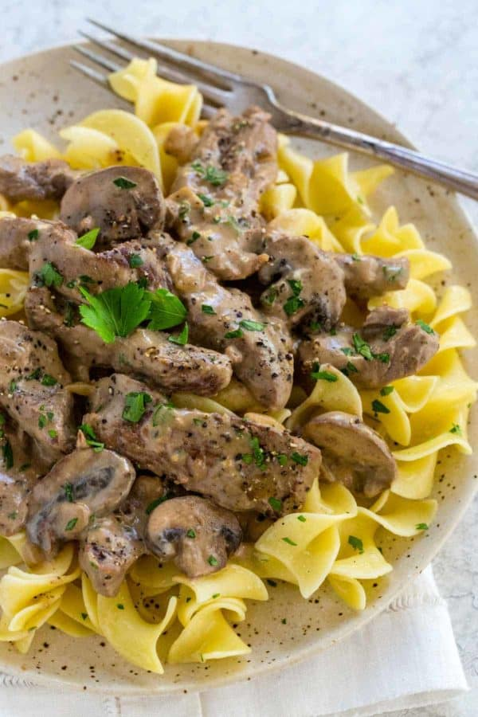

Beef Stroganoff

Ingredients
- 1 ½ pounds beef sirloin steak, ½-inch thick, and 2-inch long strips
- 1 tablespoon olive oil
- 1 teaspoon kosher salt, divided
- ½ teaspoon black pepper, divided
- 1 tablespoon unsalted butter
- 1 tablespoon minced garlic
- 1 cup diced yellow onion, ¼-inch dice
- 8 ounces brown mushroom, ½-inch thick slices
- 2 tablespoons all-purpose flour
- 1 ½ cups unsalted beef broth
- 1 tablespoon Dijon mustard
- ½ cup sour cream
- 2 teaspoons chopped parsley
Instructions
- Heat a large saute pan over medium-high heat, add olive oil.
- Once the oil is hot add the beef slices in a single layer, sear for 3 minutes to lightly brown the surface, stir and cook another 2 minutes.
- Season beef with ½ teaspoon salt and ¼ teaspoon pepper, transfer to a clean plate and reserve.
- Heat the same pan over medium heat, add butter.
- Once the butter is melted add the garlic, saute until fragrant, 30 seconds.
- Add onions and saute until tender, 2 minutes.
- Add mushroom and saute until tender and the moisture evaporates, 3 minutes.
- Add flour, stir and cook for 1 minute.
- Slowly add in the beef broth, continuously stirring to help disperse the liquid, bring to a rapid simmer, cook until sauce is thickened, 2 minutes.
- Turn heat to a low simmer and add cooked steak to the pan, stir to combine, cook until meat is warm, 2 to 3 minutes.
- Turn off heat and stir in mustard, sour cream, ½ teaspoon salt, and ¼ teaspoon pepper.
- Taste sauce and season with more salt and pepper as desired.
- Garnish with parsley and serve with egg noodles, mashed potatoes or rice.